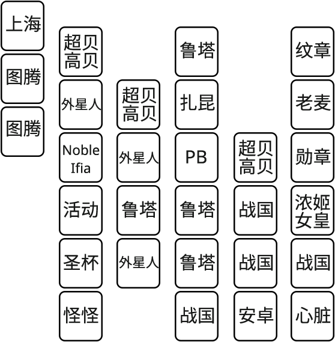
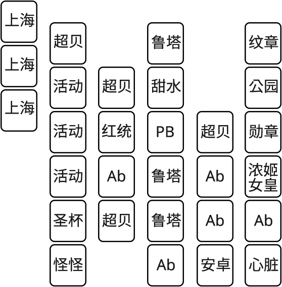

200~220级
200级
有些职业来到200级后，灯泡中可能会有一个[Skill]任务，完成后获得一个0转技能英雄之回声（Hero’s Echo），有些职业则需要通过其他任务获得
5转
首要任务是5转，确保你的装备总星之力达到100，武器达到10星。左侧灯泡领取[Job Advancement] (Lv.200)任务，Memory Keeper要你去三个门（Three Doors）找Temple Keeper，他确认你的资格后回Memory Keeper处，他要求你找3个女神，分别在射手村、废弃营地、万神殿的传送门内


其中废弃营地女神会让你飞到世界树顶层找另一扇门，注意途中怪物伤害十分高。如果没有做废弃营地前置的话，向导可将你传送至土龙Humid Swamp图，由中间的传送门传送至废弃营地

而万神殿女神会让你打败麦格纳斯，领取任务后，万神殿女神会将你传送至麦格纳斯门口
5转技能系统
回Memory Keeper复命后，此后就入河（神秘河，Arcane River）来到1岛消亡旅途，我们获得了几个5转技能和核心宝石 ，核心宝石使用后可以开出不同的技能。我们首先了解一下5转技能系统
，核心宝石使用后可以开出不同的技能。我们首先了解一下5转技能系统
打开技能栏，选择5转，能看到有个V Matrix，点开之后来到5转技能面板

可以看到上面有几个空格子、两个黄色上锁的格子、许多蓝色上锁的格子，其中没上锁的空格子你可以放技能进去，最下方的是你拥有的技能。黄色上锁的格子代表你可以花金币开锁，从而能够多放下一个技能，但不是很划算，因为这些上锁的格子是按等级来解锁的，达到某个格子的等级要求后就自动解锁了，例如第一个黄色上锁格子是205级自动解锁的，你在200级的时候花钱给提前打开了，那么等你到205级的时候就没有免费格子给你解锁了，因为你提前花钱把这个原本免费的格子开启了，那么这钱就像白花了一样，所以前期不值得。你最多花钱开两个等级之上的格子，所以顶多就有两个黄色锁的格子
右边有个Slot Enhancement按钮，可以给你的格子升级，每当你升一级，你会多一点Matrix Points，每点Matrix Points可以给格子升一级，每个格子最高5级。升级格子有什么用？比如说你给第一个格子升到5级了，你把一个技能等级为1的技能放进这个格子，那么这个技能总等级变为1+5=6，明白了吧
下面介绍一下5转技能，分为技能核心（Skill Nodes）、三合一核心（Boost Nodes）、特殊核心（Special Nodes）
技能核心有你本职业专用核心，也有职业群专用核心，还有全职业通用核心。本职业的专用技能核心就是所谓的V1、V2、V3、V4，代表冒险岛历史上先后出现的4个本职业技能。全职业通用核心包括好用的火眼晶晶 、神圣之火
、神圣之火 、神圣祈祷
、神圣祈祷 、战斗命令
、战斗命令 、进阶祝福
、进阶祝福 、极速领域
、极速领域 、艾尔达诺巴
、艾尔达诺巴 等等，神圣祈祷（又称花、假花)使用后可增加狩猎时获得的经验和物品掉落，必备。其余技能根据个人情况选择配戴，火眼晶晶加暴击率和暴击伤害，极速领域加攻速，艾尔达诺巴是个bind技能，由于全职业通用，又称通用B
等等，神圣祈祷（又称花、假花)使用后可增加狩猎时获得的经验和物品掉落，必备。其余技能根据个人情况选择配戴，火眼晶晶加暴击率和暴击伤害，极速领域加攻速，艾尔达诺巴是个bind技能，由于全职业通用，又称通用B
三合一核心包含你5转前的任意3个技能，这一个核心可以同时对这3个技能进行强化，大幅增加其伤害。三合一技能模式大致长这样

我们假定左下角为1技能，顶上为2技能，右下角为3技能，并且以1技能代表整个三合一核心。后述我会以（1,2,3）的形式来描述一个核心
特殊核心有时限7天，其中有几个比较常用，一个是Relentless Attack，在连击50次后，技能冷却时间（CD）减少20%，还有个是Auto Recovery II，使用技能时每30s给你恢复100%血量，但二者只能装备1个，也不能升级
核心的操作
核心强化：同种核心可以相互强化升级，找1岛的核心大师Archelle，右键选取你要强化的核心，选第一项ENHANCE，然后再选取你要喂给它的狗粮核心，点击Enhance确认即可。三合一核心1技能相同的为同种核心，可以相互喂。不小心喂错了怎么办，别担心，唯一能让你觉得欣慰的是，把一个被喂错的等级十几二十的核心，拿来反喂给低级核心，其经验不衰减

核心分解：不要的核心可以分解，右键选取要分解的核心，选择第二项DISASSEMBLE，确认后即可分解，获得数量不等的Node Shards
制作核心：可以消耗Node Shards制作技能或者，选择右下角Nodecrafting按钮，可以直接消耗35点Node Shards制作一个，也可以在左边选择一个技能然后选择Craft，技能核心需要140点Node Shards，而三合一核心需要70点Node Shards，最贵的是特殊核心，要消耗250点Node Shards。这里制作的三合一核心是你选择好1技能，然后他随机给你弄两个2、3技能上去的，不能够随心所欲
核心的选择
接下来介绍什么是2核3技、4核6技、6核9技
一个技能最高可以升到60级，而一个核心最高只有25级，那么得要2个25级核心，并且把这两个核心放到升到5级的技能格子中，这样25×2+5×2就有60级了
对于三合一核心来说，一个核心强化了3个技能，那么我们拿2个核心升到25级是不是就可以让三个技能都60级了，没错，这就是2核3技的含义。4核6技、6核9技也是同一个道理。这种搭配方式的优点在于花最少的格子得到更多技能的强化，缺点在于前期你很难开出你想要的三合一技能去构成X核X技
在刚入河时，你的核心宝石数量少，很难开出这种能够刚好凑齐X核X技的三合一核心，那么只能退而求其次，多用一些格子，从而把某些技能堆满。拿Kanna举例来说，推荐的9技是紫扇仰波 、阴阳制灵符（毒雾）
、阴阳制灵符（毒雾） 、双天狗
、双天狗 、鬼夜叉：大哥
、鬼夜叉：大哥 、召唤鬼神
、召唤鬼神 、紫扇白狐
、紫扇白狐 、召唤式神
、召唤式神 、破邪连击符
、破邪连击符 、夜雀
、夜雀 ，你的三合一技能最好就是从这9个里面挑3个出来组合。假如你要把（毒雾）堆满的话，找到一个比较好的毒雾三合一，比如说你开到了（毒雾，大哥，白狐），然后拿剩下一些（毒雾，X，Y）之类的核心把毒雾核心升级。鉴于你的核心宝石太少，你可能开出了其他诸如（A，毒雾，B）、（C，D，毒雾）（E，毒雾，F）之类的三合一核心，那么你使用形如（A，X，Y）的核心把（A，毒雾，B）核心进行升级，使用形如（C，X，Y）的核心把（C，D，毒雾）核心进行升级，同理使用形如（E，X，Y）的核心把（E，毒雾，F）核心进行升级。最后把这几个核心都装上，你的毒雾等级就会累加得很高了
，你的三合一技能最好就是从这9个里面挑3个出来组合。假如你要把（毒雾）堆满的话，找到一个比较好的毒雾三合一，比如说你开到了（毒雾，大哥，白狐），然后拿剩下一些（毒雾，X，Y）之类的核心把毒雾核心升级。鉴于你的核心宝石太少，你可能开出了其他诸如（A，毒雾，B）、（C，D，毒雾）（E，毒雾，F）之类的三合一核心，那么你使用形如（A，X，Y）的核心把（A，毒雾，B）核心进行升级，使用形如（C，X，Y）的核心把（C，D，毒雾）核心进行升级，同理使用形如（E，X，Y）的核心把（E，毒雾，F）核心进行升级。最后把这几个核心都装上，你的毒雾等级就会累加得很高了
此时假如你又开出了一个（毒雾，鬼神，紫扇）核心，和一堆（毒雾，X，Y）核心，想把（毒雾，鬼神，紫扇）单独升级，那么等你升级完，发现你装备不上，因为你已经装备了一个（毒雾，大哥，白狐），1技能相同的三合一不能装备2个
所以2核3技其实应该是这样的（A，B，C）（B，A，C）或者（A，B，C）（B，C，A）等等不详细列举了，4核6技、6核9技的排列组合更加复杂多样
以下讨论一下Kanna的完美核心，（紫扇，天狗，召唤式神）三合一，顺序可以打乱，这三个技能是Kanna打boss时候的主攻技能；（夜雀，破邪，鬼神），一些伤害较高的辅助技能；（毒雾，大哥，白狐），在boss战中几乎没伤害的技能，但在刷图中很有用。所以你应该明白，这样分配技能的话，在刷图中你可以把（紫扇，天狗，召唤式神）的两个核心卸下来，装其他的主动技能，在boss战中你可以把（毒雾，大哥，白狐）卸下来，换上其他的技能，节省格子。所以你又懂得了Kanna的6核9技并不是每时每刻都需要装备满的，不同的场景下，只需要4核6技就够了，但为了满足不同场景的切换，你首先得拥有6核9技
在刚入河阶段，我们很长一段时间不必管2核3技、4核6技、6核9技，等你的Kanna成型了，刷到的核心变多了，再慢慢考虑。刷什么图用什么技能，打boss，小boss，偷点懒，紫扇就够了，核心全部堆给紫扇，把其余的技能卸下来多装几个紫扇上去；3岛开始刷钱了，毒雾成了主攻技能，毒雾一定要能秒怪，核心全部堆给毒雾，多装几个毒雾上去。所以前期我们不必追求完美的2核3技、4核6技、6核9技，把主要的技能升满就十分有用了，硬要追求的话，不做主号的Kanna4核6技就够了
详细介绍了三合一技能，可不能忽视其他技能，比如V1 雪女召唤 、V2 召唤灵石
、V2 召唤灵石 ，尤其是召唤灵石，在主攻核心满级之后，最优先将灵石升至满级，在刷钱时这个技能能帮你清理半张地图甚至整张地图的怪，在混boss车时这个技能能给大佬队友们提升巨量伤害，并提升2个攻速，直接起飞。Kanna混车，靠的就是灵石、B、减伤罩子
，尤其是召唤灵石，在主攻核心满级之后，最优先将灵石升至满级，在刷钱时这个技能能帮你清理半张地图甚至整张地图的怪，在混boss车时这个技能能给大佬队友们提升巨量伤害，并提升2个攻速，直接起飞。Kanna混车，靠的就是灵石、B、减伤罩子
介绍完5转核心系统后，继续完成我们入河任务，首先去右上角打10个Happy Erda，别小看这才10个，你根本打不动，但好在不是1滴血，打完左边灯泡完成任务给一个假的岛球 ，在装备栏把它装上，此后你再打怪就不再像这10个这么难打了。另外你可以打开你的超级属性，往下滚动看到最底下的ARCANE FORCE，点个七八点，这样往后的刷怪都能变得稍微容易点。ARC就相当于200级后的星之力，低于地图要求的话就像打Happy Erda那样刮痧。去主城找Kao继续接下来的任务，完成了1岛的所有前置后，你获取了一个真岛球
，在装备栏把它装上，此后你再打怪就不再像这10个这么难打了。另外你可以打开你的超级属性，往下滚动看到最底下的ARCANE FORCE，点个七八点，这样往后的刷怪都能变得稍微容易点。ARC就相当于200级后的星之力，低于地图要求的话就像打Happy Erda那样刮痧。去主城找Kao继续接下来的任务，完成了1岛的所有前置后，你获取了一个真岛球 并开启了1岛的每日任务，包括Daily Quest和Erda Spectrum，在1岛最左边两个小姐姐处领取。我们换上真岛球后，开始做每日任务
并开启了1岛的每日任务，包括Daily Quest和Erda Spectrum，在1岛最左边两个小姐姐处领取。我们换上真岛球后，开始做每日任务

1岛日常
Daily Quest没什么好说的，就是狩猎和收集物品，在你刚刚200级时，Tranquil Erda、Lantern Erda是比较难打的，因为要求的ARC较高，同样收集Repose Inhibitor也较难，我们可以替换掉，在领取任务时，有个黄色按钮EXCHANGE，按下这个按钮，然后再把你不想做的任务选出来，会随机给你替换成其他任务；如果任务都挺简单，选红色按钮CONFIRM即可。
Erda Spectrum任务俗称踢球，是个组队任务，你在群里问：“请问有没有大佬带踢球？”，如果有你们就约好在几线任务NPC处集合。具体的任务大佬带你进去几次之后就明白了，可以在大佬带过你之后，你再回来读一读我写的
刚开始进去是打怪来收集Erda，上面有数字显示，100个就足够了，然后就对中间的机器使用采集/交互键，怪物就全部消失，此时左右两边会有不同颜色的光柱，而你攻击中间的机器会生成不同颜色的光球，你要做的就是把红色球使用采集/交互键推到红色光柱里，把蓝色球推到蓝色光柱里去，很简单，每个球得1分。还有紫色球，紫色随便推到哪边都行，还得2分。总计10分就进入下一环节。下一环节随机，要么是满地图打怪，让怪物数量不超过50；要么是推虫子，对中间的机器长按采集/交互键发出激光，面对虫子打出去，虫子就慢慢被打退了，退回洞里去计1分，达到5分即可完成

Daily Quest和Erda Spectrum是1岛每日必须做的，踢球在200级的时候每天可以踢3次，这些任务奖励你的岛球是经验值，喂给你的第一颗岛球升级用。打开你的装备栏，找到蓝色小按钮ARCANE即可查看你的岛球升级情况

岛球升级之后会给你带来大量的主属性（竹鼠）和ARC（神秘力量），使你迅速成长
联盟
200级开始你可以找主城的Dame Appropriation开通联盟，选择(Lv.60)[Legion]对话完成任务，之后可以点 ，选择Manage Legion进入联盟
，选择Manage Legion进入联盟

这是联盟拼图板，可以看到中间有一小圈属性，为力量（STR）、敏捷（DEX）、智力（INT）、运气（LUK）、物理攻击力（ATT）、魔法攻击力（MATT）、血量（HP）、魔量（MP）；外围有一圈为异常状态抗性（Abnormal Status Resistance）、额外经验值（Bonus EXP）、暴击率（Critical Rate）、boss伤害（Boss Damage）、稳如泰山（Knockback Resistance）、buff持续时间（Buff Duration）、无视防御（Ignore DEF）、暴击伤害（Critical Damage）。3000联盟等级之前是只有内圈的，3000开始之后，每1000等级开放一圈外层属性，6000可以全部开满。联盟等级就是你所有大于60级的角色等级之和
下面是你的一些角色卡，SSS级是你达到250级，SS级是你达到200级，S级是达到140级，A级是达到100级，B级是达到60级。不同职业不同等级的角色卡具有不同的属性
点击Assign Units即可将你的角色卡摆入拼图板中，首先中间有4个小方格闪烁，代表你的角色卡要从这里开始摆放

点击左侧的绿色对勾就可以把这块拼图放下了，点击右侧的按钮还可以进行旋转、翻转、取消。确认放下后可以继续放第二个角色卡，如果你有的话

需要有边挨着上一块拼图放置，如图，角挨着角放可不行
你可以注意到右下角的面板，显示你放下的拼图给你加了些什么属性

我放置了一张SS级的机械师，给我加了20%的buff持续时间；一张SS级的Kanna，加了5%boss伤害。角色本身带来的属性显示在左边。右边是拼图所带来的，我的机械师放在了最中间，占了2格MATT、1格ATT、1格DEX，就加了2MATT、1ATT、5DEX；我的Kanna全部都放在了MATT的范围里，所以加了4MATT，总共就是6MATT了。你根据你所需要的属性，把角色卡放置在对应格子里就行了
你再往上看到联盟拼图板那张图，我说中间有一圈属性，你可能注意到内圈和外圈的不同，内圈属性后有个小三角，点击发现，内圈属性可以更改

那你说我可以把所有属性都改成ATT吗，你想多了
你把你的拼图拼好后，点击Apply即可生效了。然后你找Dame Appropriation领取两个任务

然后再点开Manage Legion面板，点击右侧大大的Start Raid按钮，来到打龙现场

你可以看到有飞来飞去的各种颜色的小龙，还有特殊的金色龙，我们接的任务就是打五颜六色的小龙共100只，打金色龙20只，然后就可以点击右侧的Retreat出去了，大龙不需要打。出去以后，Dame Appropriation奖励你一些联盟币，然后在主城找到Dame Appropriation完成两个任务，额外获得30联盟币
打龙获得的联盟币是这么算的，每当你的小队（就是你摆放在拼图里的所有角色）打大龙打够1千亿伤害了，奖励1个联盟币……当然不是从你进场开始算，他们无时无刻不在打龙，在后台默默地打。所以你想要获得更多的联盟币就得提升这些角色的战斗力。从等级上来说，140~179级是一个阶段，180~199是一个阶段，200~209是一个阶段，210~219是一个阶段，每升一个阶段提升大量战斗力。从星之力来说，60~119星之力是一个阶段，120~179是一个阶段，180~500是一个阶段，每升一个阶段提升大量战斗力。除了提升每个角色的战斗力，你还可以靠角色数量取胜，等你的联盟等级达到3000，你可以放18个角色进入拼图系统，达到5500可以放27个角色，达到8000可以放36个角色，这就大幅加强小队战力。你的联盟等级达到升至下一阶段的要求时，你就可以找Dame Appropriation去Raise Legion Rank，需要花费一些联盟币
外星访客
200级可以进行一个新副本，外星访客Alien Visitor，从次元之镜进入，分为5关，1、2关打180个小怪，3关打一个小boss，4关打180个小怪，5关打一个小boss。打boss可以掉落180级的饰品


 ，其中戒指无法潜能，无法上星。这个饰品厉害在3件套可以加M/ATT 50，5件套可以加30boss伤，第5件装备是一个180级头盔
，其中戒指无法潜能，无法上星。这个饰品厉害在3件套可以加M/ATT 50，5件套可以加30boss伤，第5件装备是一个180级头盔 ，稀有到没见过。三件套属性即可帮你提升不少面板伤害了。过渡装推荐选择外星人饰品三件套，搭配贝勒德饰品三件套，其中外星人必须要占戒指、吊坠2格，同时贝勒德也必须要占戒指和吊坠2格，还有一个腰带和耳环位置，外星人和贝勒德各自占1格即可，剩余的饰品选择boss眼、脸、戒指、badge、口袋等构成套装。能打过困难森兰丸的，每天会出产大量150级战国装备，可以选择将140的芬撒装备拖德给战国装备，比如武器、鞋子、手套、披风。这里总结一套过渡装仅供参考
，稀有到没见过。三件套属性即可帮你提升不少面板伤害了。过渡装推荐选择外星人饰品三件套，搭配贝勒德饰品三件套，其中外星人必须要占戒指、吊坠2格，同时贝勒德也必须要占戒指和吊坠2格，还有一个腰带和耳环位置，外星人和贝勒德各自占1格即可，剩余的饰品选择boss眼、脸、戒指、badge、口袋等构成套装。能打过困难森兰丸的，每天会出产大量150级战国装备，可以选择将140的芬撒装备拖德给战国装备，比如武器、鞋子、手套、披风。这里总结一套过渡装仅供参考

明智光秀
左边灯泡中有一个(Lv.200) [The Asura Crisis]任务，是boss明智光秀的前置任务，不做也行，没有比较高的练度是打不过光秀的，可以请大佬带。光秀掉落银狼硬币，可以换取160级战国武器，一件160级战国武器在150级战国套装内算作2件装备。虽然160战国武器基础属性等同于160级Ab，但无法取代Ab成为毕业装备
爆率装备
200级之后，升级速度进一步放缓，这段时间你可以多了解一些装备以及其他的知识
无论什么职业，最重要的莫过于刷钱养号，如果你的主号刷钱效率实在难看，那么弄一个Kanna吧。最最重要的是在以下9件饰品中（戒指×4、吊坠×2、脸、眼、耳环），用魔方洗到绿色，然后可以洗出物品爆率（Item Drop Rate: +20%）、金币获得量（Mesos Obtained: +20%），装备上最高叠满100%金币，也就是5件金币，剩下4件就堆物品爆率，简称5钱4爆，假如你运气爆棚，一件装备上开出了两条爆率，那么你可以拥有5钱5爆、5钱6爆，以此类推，十分难得，不必追求，装备上最高能叠200%爆率。这9件爆率装备不强求洗出百分比主属性
对于不起Kanna的玩家，钱爆装也是非常重要的，刷钱时也至少得5钱4爆，只是刷钱效率比Kanna低，不管什么号，都得有爆率装。除了爆率装，你也得有一套输出装，把这些位置洗成百分比主属性才行，也就是说升级刷钱时穿爆率装，打boss时穿输出装
装备洗魔方
谈到洗装备潜能，之前我们提到三种魔方，都是垃圾魔方，你如果获得了我所提到毕业装备，那么就应该使用现金商城中的红、黑魔方
 来洗。进入现金商城后，找到Enhance即可找到这两种魔方。其中黑魔方的升阶概率最大，用于我们从紫潜能洗到黄，从黄潜能洗到绿，黑魔方还有个特点是可以选择保留之前还是之后的潜能；红魔方用于洗已经升到绿的装备，因为便宜，无法选择之前还是之后的潜能。在游戏前期，如果你查看往后最近的活动中没有魔方打折活动，没有DMT（Double Miracle Time，双倍奇迹，即装备升阶概率提升一倍，并且有概率直接从紫潜能洗到绿潜能，并且有可能伴随魔方打折），那么你可以随时买魔方来洗，推荐先攒1~2b来洗，1b=10亿，如果有这样的活动，攒钱吧，做个最抠的人，任何能获得金币的地方都不要错过了。再次强调，黑魔方对于萌新来说只用于升阶，你如果洗出个单条12%竹鼠，觉得舍不得，用黑魔方去洗，那你也太没远见了。随着等级的提升，你把装备9%竹鼠逐渐升级到15%竹鼠、21%竹鼠甚至更高，你感觉自己打不太动怪了，升级自己装备肯定没错。武器、纹章、副手，追求ATT/MATT%而不是竹鼠，可以再加两条无视（Ignore Defense）或者Boss Damage用于打boss，工具人Kanna没必要追求无视和boss，主号Kanna需要
来洗。进入现金商城后，找到Enhance即可找到这两种魔方。其中黑魔方的升阶概率最大，用于我们从紫潜能洗到黄，从黄潜能洗到绿，黑魔方还有个特点是可以选择保留之前还是之后的潜能；红魔方用于洗已经升到绿的装备，因为便宜，无法选择之前还是之后的潜能。在游戏前期，如果你查看往后最近的活动中没有魔方打折活动，没有DMT（Double Miracle Time，双倍奇迹，即装备升阶概率提升一倍，并且有概率直接从紫潜能洗到绿潜能，并且有可能伴随魔方打折），那么你可以随时买魔方来洗，推荐先攒1~2b来洗，1b=10亿，如果有这样的活动，攒钱吧，做个最抠的人，任何能获得金币的地方都不要错过了。再次强调，黑魔方对于萌新来说只用于升阶，你如果洗出个单条12%竹鼠，觉得舍不得，用黑魔方去洗，那你也太没远见了。随着等级的提升，你把装备9%竹鼠逐渐升级到15%竹鼠、21%竹鼠甚至更高，你感觉自己打不太动怪了，升级自己装备肯定没错。武器、纹章、副手，追求ATT/MATT%而不是竹鼠，可以再加两条无视（Ignore Defense）或者Boss Damage用于打boss，工具人Kanna没必要追求无视和boss，主号Kanna需要
装备火花
装备还有一个重要的附加属性那就是火花，如图绿色属性就是火花属性

使用
 可以重置火花属性，彩火可以赋予更强的属性，但产量稀少，红火可以直接在射手村、神木村等杂货店购买，一般我们使用红火洗出能用的火花属性就可以了，追求完美火花属性是大后期的事。什么样的火花算是能用呢，像这种有一点主属性，又有一点全属性百分比，早期算是还可以了，或者主属性特别高，也行；对于武器来说，火花会给你带来大量ATT/MATT，能加个50多也不错了，早期算是能用。中后期火花不同装备有不同要求，可以在群内询问大佬。有些装备，你怎么上火花，他都只能加那么一丁点属性，比如贝勒德饰品、甜水饰品，那你能洗出竹鼠或者ATT/MATT就收手就OK了，他上限就那么高。到了中后期，为了追求更高属性你还得再来洗火花，红火彩火能洗出的上限比你想的还要高，但是就是见不到。此处粘贴泥潭火花攻略
可以重置火花属性，彩火可以赋予更强的属性，但产量稀少，红火可以直接在射手村、神木村等杂货店购买，一般我们使用红火洗出能用的火花属性就可以了，追求完美火花属性是大后期的事。什么样的火花算是能用呢，像这种有一点主属性，又有一点全属性百分比，早期算是还可以了，或者主属性特别高，也行；对于武器来说，火花会给你带来大量ATT/MATT，能加个50多也不错了，早期算是能用。中后期火花不同装备有不同要求，可以在群内询问大佬。有些装备，你怎么上火花，他都只能加那么一丁点属性，比如贝勒德饰品、甜水饰品，那你能洗出竹鼠或者ATT/MATT就收手就OK了，他上限就那么高。到了中后期，为了追求更高属性你还得再来洗火花，红火彩火能洗出的上限比你想的还要高，但是就是见不到。此处粘贴泥潭火花攻略
以下简单提要一下文章中的火花知识。
一个装备的火花最高由4条不同的属性相加而成，例如，某装备火花由以下4条属性相加：①INT +56、②INT and LUK +28、③Matt +7、④All +7%，相加后显示出来的就是INT +84、LUK +28、Matt +7、All +7%。4条属性必须互不相同，即使数值不同也不行，即不可能出现4条不同数值的INT
其中某1条属性可以是：①单加某一种属性，如INT +56、②双加某两种属性，如INT and LUK +28、③加物理攻击，如Att +7、④加魔法攻击，如Matt +7、⑤加全属性，如All +7%、⑥加防御、⑦加速度、⑧加跳跃、⑨加HP、⑩加MP、⑪降低配戴等级，所以装备的4条火花就是从这些属性里面随机选取的。对于武器来说，加的物理攻击、魔法攻击要高很多，并且还可以加Boss伤害、总伤害
每条属性都有不同的等级，一共有7个不同等级，大佬们喜欢称之为T1~T7，其中T7等级为最牛逼的，不同装备的火花等级可以在表中查到。假如某一件装备的4条火花等级全部都是T7级的，那么大佬们习惯称之为4T7，同理还有什么3T6、2T7之类，那就是有3条火花是T6级的，或者有2条火花是T7级的。那么怎么丢了一两条属性呢，不是说好了总共4条属性吗，这里怎么变2条3条了？那是因为有诸如防御、速度、跳跃、降等之类的垃圾词条占用了一条火花，这些火花一点屁用都没有，即便它们的属性达到了T7，也根本不能给你带来任何提升
因为火花又加主属性，又可以加att/matt，又可以加all%，那么到底这些属性加了多少面板呢，怎么看哪个火花更棒呢。有些大佬就把att/matt和all%全部换算成主属性，然后和火花的主属性加起来，看哪个属性更好。但是不同职业不同装备不同等级的角色，换算出来的数值都不一样，所以有些复杂。例如我举的第一个例子：①INT +56、②INT and LUK +28、③Matt +7、④All +7%，这是140级装备的4T7级别火花，以1Matt≈3竹鼠、1all%≈8竹鼠换算，则总竹鼠为84+21+56=161，这里没有将LUK换算进来
另外有些大佬为了避免这种竹鼠的换算，就假设某件装备上的火花4条全部由单条竹鼠和双属性构成，例如某件140级防具由①INT +56、②INT and STR +28、③INT and DEX +28、④INT and LUK +28构成，合计INT +140、STR +28、DEX +28、LUK +28，这也是4T7级别火花。然后根据这些几T几火花的数值列了一张表，可供你查阅，表可在群内问号机处查询到。这些表的意义在于让你知道你火花处于哪一个水平，距离上限还有多远
但是你别看我举的例子都是4T7，就以为很容易达到，这相当于你得同时满足：又高、又帅、身材极佳、首富、音乐天才、体育健将、智商极高、情商极高、万人迷……具体来说，你只能通过彩火或者黑火来洗出T7级别属性，概率为1%，而同时洗出4条T7的概率为……你说你只想要一个及格的数值，那么请看泥潭攻略红字总结部分，或者群内表格。附：彩/黑火范围T4~T7，红火范围T3~T6
警告，有钱了就先洗装备爆率，别在前期花大量钱在火花上，我说了，如果你成为了首富，巨有钱，可以追求4T7，如果中产，每日仅有几B金币进账，你的目标是及格-标准
前期毕业装备

全身17X，仅供参考
中后期可以使用可以上星的巨匠戒指、Kanna戒指等，巨匠戒指是在饰品制作达到巨匠后才可制作的，消耗大量


 和1个
和1个 ；浓姬副手需要打浓姬爆碎片，15片兑换一个副手；特米盾牌需要做昭和村Showa Town、忍者城堡Ninja Castle系列任务，打各自的boss获得；没出特米盾牌也可以用女皇盾牌代替，女皇盾牌打普通希纳斯爆配方，然后通过十级装备制作来打造
；浓姬副手需要打浓姬爆碎片，15片兑换一个副手；特米盾牌需要做昭和村Showa Town、忍者城堡Ninja Castle系列任务，打各自的boss获得；没出特米盾牌也可以用女皇盾牌代替，女皇盾牌打普通希纳斯爆配方，然后通过十级装备制作来打造
这里举例描述一下装备的强化路程，一开始获得的垃圾装备诸如芬撒之类，是值得上星并上紫潜能的，洗黄洗绿没有必要，紫潜就行了，然后等你获得了毕业装备就把潜能和星级拖德上去。首先我们优先处理三大件，纹章、主武器、副手武器，这三件几乎都是毕业装备了，在210-220级之前，都可以用红黑魔方弄成6%~9%的ATT/MATT，上星到12星即可，然后弄其余的装备，比如鲁塔上下衣，也是毕业装备，可以用红黑魔方洗成6%~9%主属性，上到12星。其余的不是毕业装备的就随便洗洗潜能。这种属性能让你玩一阵子了，虽然玩的不舒服，这段时间你得想办法弄到毕业装备，然后省钱。等你慢慢拥有了毕业装备，并把它们全都洗成6%~9%主属性，12星，下一步我认为洗魔方提升更大。还是从三大件开始，洗成12%~15%ATT/MATT，其他装备12%~15%主属性，尽量让每一件装备都洗成绿潜。我猜此时你可能慢慢开始能够秒怪了吧，能够秒怪了，再处理首饰，9件首饰一件件洗绿，洗成爆率装，此时有无主属性均可。有了爆率装，你的金币应该多起来了，攒钱等活动，把星星提升到15~17星。上完星星之后又是洗魔方，提升到18%~21%ATT/MATT、18%~21%主属性。最后就是冲20~22星，以及30%~36%ATT/MATT、30%~36%主属性，达到这样就毕业了
道场
通过次元之镜，可以来到Mu Lung Dojo，与So Gong对话可以进入道场，进入后清除所有buff，然后再给你一段时间把你需要的buff都加上，就可以从右边传送口去打第一层的boss了，打完一层的boss迅速从右边传送口进入下一层，等15分钟看你能通关多少层的boss，这就是你的成绩了
你的成绩将计入排行榜，你的排名若是能够排到全职业全区前70%，则在下一周可以找So Gong领取你的周奖励，对话选择倒数第二项，I'm ready for the……即可领取，奖励在10000~21000分不等，看你的成绩如何了
积分可以在Lao处兑换奖励，有10张30分钟的双倍经验券，有3天的经验项链，有木桩等等可以兑换，如果你的双倍经验券不够用，那么道场可不要错过了
205级
开放1.5岛（翻转城），做完任务奖励几十个任选岛球，并且有个(Lv.205) [Vanishing Journey] Reverse City Research Request任务，对话完成后，你的1岛岛球任务将打怪扩展到1.5岛来，奖励的岛球也更多一些。1.5岛怪物密度显得比1岛高，此时你可以不用在1岛磨了，选择一个翻转城高燃烧地图刷到210级
210级
来到1岛剧情最后的地方（Damp Falls），跳下去，开启2岛（啾啾岛）之旅

2岛日常
做完前置后获得一个2岛岛球，找主城的Master Lyck领取Daily Quest，找右上角Quiet Village Path地图的Simia领取Hungry Muto（俗称做菜）任务
Daily Quest中要求打Crilia、Patriarch Crilia、Birdshark、Patriarch Birdshark的任务可以替换掉，这里地图的ARC要求较高
做菜首先找大佬带几次就会了，但你还没法独立完成做菜，大概到230级左右你可以独立做菜了，那时候伤害足够，也足够熟练了。同样先去体验，再来看看我所写的。
一般我们都选择Hard模式，奖励的岛球多，但刚210的你独自可打不过困难模式。一进场可以看到顶上的提示面板

最上面我用红圈圈住的进度条，每当我们成功做成一道菜，绿色进度条就往右边走一点，等进度条走满任务就完成了，最上面还有倒计时，需要在倒计时内完成所有菜品制作。下面红圈圈住的进度条，是本道菜品的制作倒计时，如果在BONUS之前完成，将获得PERFECT评分，上面的绿色进度条将大幅增加，熟练的话，我们只需要完成2~3次PERFECT即可通关了。
下面的物品是我们需要收集的物品，显示了种类和个数要求。当我们拾取物品时，头顶也会很明显的显示我们拾取了哪种物品，有几个。物品掉出后很快会消失，需要马上捡起来，只能手动捡，宠物不能捡，而且我们每次只能收集一种物品，你如果捡了5个鱼鳍，又想去捡几个狮鬃，那么之前捡的鱼鳍就白捡了，浪费时间。每收集齐某样物品时，我们回到中间的锅子处即可交任务

做菜主要是要熟记各种物品在什么地方打，其次是记菜谱，因为有时候他不会给你全部的菜谱，有几个物品显示为问号需要你去寻找。此处简要的介绍了各物品出的地点，以及传送带的位置和方向，粉色箭头就是传送带了，人物进入传送带就像坐电梯一样。还有一个隐藏的传送方式，在水中，一直按方向键↓可以瞬移到熊掌、狮鬃这两个台阶，具体的就是在右边的水域传送到熊掌，左边的水域传送到狮鬃

首先我私自定义一下高级食材和低级食材，这只是个相对概念，高级食材总在更高更远的地方获得，狮鬃相对于鹿蹄来说稍高级，鱼鳍相对于狮鬃来说更高级，右边同理，中间的牙齿、羽毛是最高级的食材，比鱼鳍、龟壳更高级。在我的概念里，所有菜谱中只有一个最高级食材，剩下的统统称为低级食材。高级食材需要10个，低级食材需要5个
有的菜品只需要2种食材，即1种高级食材+1种低级食材，菜谱要么是狮鬃+鹿蹄，要么是熊掌+香蕉皮，即要么是左边平台，要么是右边平台，不用上到高层去
有的菜品需要3种食材，即1种高级食材+2种低级食材，菜谱要么是鱼鳍+狮鬃+鹿蹄，要么是龟壳+熊掌+香蕉皮，这两种好记，即左边三个平台和右边三个平台。除此之外还有牙齿+鱼鳍+龟壳，牙齿是最高级的食材，鱼鳍、龟壳相对低级，这道菜也好记，就是左边、右边、中间三个地方的最高最远处。最后还有个羽毛+鱼鳍+狮鬃，假如你记不住，你得知道3种食材的菜谱里，只有牙齿+鱼鳍+龟壳是需要左、中、右到处跑的，剩下的菜品中低级食材都在同一边，如果任务提示你（羽毛00/10，鱼鳍00/05，？00/05）或者（羽毛00/10，？00/05，狮鬃00/05），很明显你就得在左边平台中找材料，如果任务提示你（？00/10，鱼鳍00/05，狮鬃00/05），很明显你就得在中间平台找材料，因为在左侧，鱼鳍已经是最高级的食材了，但此处鱼鳍只需要5个，说明本道菜品中还有更高级的食材，更高级的食材必然在中间
还有的菜品需要4种食材，即1种高级食材+2种低级食材+1个呲溜果，呲溜果只需要收集1个就好，这个果子出现的地方不定，需要寻找，如果有个？是00/01的那肯定就是呲溜果了。菜谱有两个，并不是简单的从3种食材菜品中加1个呲溜果，其高级食材均为中间的高级食材羽毛和牙齿。第一种是羽毛+熊掌+香蕉皮+呲溜果，如果记不住，那么至少得记住熊掌+香蕉皮是一种固定搭配，有熊掌的菜品就有香蕉皮，有香蕉皮的菜品就有熊掌，不管是几种食材的菜品都满足这一规律，这样只要不是熊掌和香蕉皮都为？就都搞得定。第二种是牙齿+龟壳+狮鬃+呲溜果，这怎么记呢，没有固定搭配，只好这样记，抛开做菜地图不看，回忆一下啾啾岛地图，牙齿是啾啾岛上方天空怪物中最高级的Birdshark掉落的，龟壳是啾啾岛左边河流怪物中最高级的Rhyturtle掉落的，狮鬃是啾啾岛右边陆地怪物中最高级的Flyon掉落的，如果你觉得牵强附会，当我没说好了，这个我也记不来
210级后，灯泡中有任务帮你减少1岛日常的负担，你的1岛Daily Quest任务减少一个，踢球次数减少一次，奖励不变。当你踢了2次球后，再对话，你选择yes，就可以白领一次奖励
2岛升级地图可以选择Slurpy Forest Depths
215级
开放2.5岛（真香岛），同样做完任务会奖励几十个自选岛球，并且有个(Lv.215) [Chu Chu Island]Master Lyck’s Request任务，对话完成后，你的2岛岛球任务将打怪扩展到2.5岛，获得的岛球也会更多一些。此岛升级也叫一个香，随便找个高燃烧地图刷吧
220级
3岛日常
开放3岛（拉克兰，Lachelein），做完前置奖励3岛岛球，找小巷子里的Gray Mask领取Daily Quest，其中狩猎Dreamkeeper、Blue-eyed Gargoyle、Red-eyed Gargoyle的图ARC等级要求较高，可替换。主城最右边的蓝色兔子Mr. Flopsy the Dreamweaver领取碎梦塔任务，单人完成

首先看到左边面板，一开始有3个紫色方格，代表对应的三个区域需要我们去清理，我们在中间图的上下左右四个传送门传送到对应的区域，消灭其中的怪物，并且把喇叭打到黄色就可以去下一个区域清理了，此时紫色方格数量-1，上方紫色进度条也会往左回退一点。紫色方格数量每隔一段时间就新增几个，如果面板上紫色方格数量大于黄色方格，如图3>2，上方紫色进度条会往右增加，你要做的就是在他们一格格都变紫前清理掉他们变成黄色，使得上方紫色进度条清零，就可以进入下一层
每通关10层，你会保留记录，下一次进来的时候可以选择从保留的层数进。需要注意的是，你得打通第X0层，进入X1层才能保留X0层，下次才能从X0层开始打；而下次从X0层进来时，你也得通关这一层，退出才有奖励
左边面板有几个技能，手掌：暂停紫色进度五秒，可以在刚进门时施放，因为一开始是紫>黄，上方紫色进度会增加。铃铛：随机使一个紫变黄，可以在进门时施放，但怪物仍在，不久后就变回紫了，需要尽快清理。猫头：嘲讽怪物，使其攻击玩偶，怪物攻击玩偶就不会让喇叭变紫，可以放在上下左右四个区域里，因为要在四周转移的话很浪费时间。炸弹：炸死一屋子怪物。以上所有技能推荐在通关X0层时使用
在主城钟楼左边常年有5个站街大佬，在完成了每日的碎梦塔任务后再与他们对话可以领取额外的硬币，硬币可以在蓝色兔子那换取岛球，与兔子对话选择第二项即可

220级灯泡有任务帮你减轻1、2岛每日任务负担，1岛每日任务继续减少一个，此时踢球变成只用踢一次；2岛每日任务减少一个，做菜只需做两次
刷钱
进入3岛，终于不用忙于升级了，刷钱是第一重要的，因为装备没有提升的话，越升级越刮痧越痛苦。人气刷钱图有Chicken Festival 1（鸡1）、Outlaw’s Street 2（纸袋2），尤其是纸袋2，通常都有很多人。此处再介绍两个刷钱必备buff，那就是聚财秘药（Wealth Acquisition Potion， ）和联盟之财富Lv.3（Legion's Wealth Lv. 3，
）和联盟之财富Lv.3（Legion's Wealth Lv. 3， ）。聚财秘药的效果是提升物品、金币掉落率20%，联盟之财富的效果是提升每袋钱50%的金币数额。聚财秘药需要炼金制作，所以在此之前请提升自己的炼金等级，使用打boss掉落的聚财秘药配方（Wealth Acquisition Potion Recipe）后，可以看到所需材料为杜松莓种子精油
）。聚财秘药的效果是提升物品、金币掉落率20%，联盟之财富的效果是提升每袋钱50%的金币数额。聚财秘药需要炼金制作，所以在此之前请提升自己的炼金等级，使用打boss掉落的聚财秘药配方（Wealth Acquisition Potion Recipe）后，可以看到所需材料为杜松莓种子精油 ×10、最高级物品结晶
×10、最高级物品结晶 ×3、贤者之石×1、最高级空药水瓶
×3、贤者之石×1、最高级空药水瓶 ×1，其中最高级物品结晶、贤者之石可以通过分解高级装备获得。我们来到匠人街，再打开物品栏，点击最底下的
×1，其中最高级物品结晶、贤者之石可以通过分解高级装备获得。我们来到匠人街，再打开物品栏，点击最底下的 ，把没用的装备比如大量的芬撒放进来，点OK即可分解，需要事先给其他栏（ETC.)留出一些空位。需要注意的是，并不是一张配方只能制作一次，一张配方可以供你使用一整天，每一次制作可获得3瓶聚财秘药，所以一般我们是先大量的采药攒下很多的种子精油再来做聚财，不然很浪费配方，等你真正开始去采药你就懂了，种子精油很难挖到的。联盟之财富可以在主城的联盟币商店处购买，70个联盟币可以买一个30min的buff
，把没用的装备比如大量的芬撒放进来，点OK即可分解，需要事先给其他栏（ETC.)留出一些空位。需要注意的是，并不是一张配方只能制作一次，一张配方可以供你使用一整天，每一次制作可获得3瓶聚财秘药，所以一般我们是先大量的采药攒下很多的种子精油再来做聚财，不然很浪费配方，等你真正开始去采药你就懂了，种子精油很难挖到的。联盟之财富可以在主城的联盟币商店处购买，70个联盟币可以买一个30min的buff
此处小结一下爆率和金币加成。爆率加成可以来自：1.装备潜能的Item Drop Rate: +20%，以及怪物公园贪婪吊坠，此二者之和最高叠到200%；2.联盟之幸运，也是联盟币商店购买，Item Drop Rate: +50%，以及各种系统赠送的掉落率buff，此二者只取最高值，最高100%；3.怪怪卡，掉率最高100%，即一张item large；4.聚财秘药、内在潜能、神圣祈祷等；5.怪怪卡Item Acquirement + 10%，极其罕见，但很牛逼，和之前第3组怪怪卡爆率不冲突，牛逼在之前几组爆率之间以加法叠加，这一组以乘法叠加，就是前面几组爆率以及自身原始爆率加法做完之后，乘1.1。金币获得量加成可以来自：1.装备潜能的Mesos Obtained: +20%，最高叠到100%；2.联盟之财富，Mesos Obtained: +50%，以及各种系统双倍金币活动，此二者最高叠到100%；3.幻影角色卡、内在潜能、刀飞被动；4.聚财秘药 +20%，聚财秘药在爆率中为加法叠加，在金币中为乘法叠加，乘1.2；5.高于怪物10级以上，或低于怪物10级以上，最终金币获得衰减
准备好以上几种buff后，带领你的3宠物，穿上你的5钱4爆，开启你的爆率怪怪卡，然后尽情的秒怪吧，此时你的金币获得量应该在1800%以上。一般职业刷钱，大多是升级途中顺带刷钱，所以MVP、双倍、花等一个不能少；Kanna刷钱的话不推荐，刷钱就是纯刷钱，尽量少获得经验，因为从刷钱开始Kanna的等级提升越慢越好。花就是技能神圣祈祷，主教的特色技能，在5转全职业通用技能里有它，所有职业都能用。注意，刷钱，秒怪是基础，如果达不到秒怪就把刷到的钱用来提升其他装备的潜能，其他装备指除了那9件爆率装备之外的装备，比如三大件、衣服、手套等。另外学习一个图的刷法也是很重要的，你可以去搜索一下刷钱教学视频，每个人的方法可能都不太一样，你多看看之后选择一个你觉得刷的顺手的就好，等你有了基本理解后，再通过战斗分析找出收益最大的刷法即可。刷钱可以让你慢慢升至230级，231级开始你在3岛刷的钱逐渐衰减，目前版本你无法自杀卡在230级刷钱只能慢慢升级去4、5岛刷钱
路西德
刷钱之余，你可以坐大佬们的车混混路西德（Lucid），车不是你喊有就有的，需要多个大佬一起带你，然后你还有可能死出车外。注意我说的以下几点：P1阶段，你的眼睛盯着自己的头顶看，注意从顶上砸下来的石头人 ，一旦看到头顶上出现石头人马上瞬移离开，否则石头人将可能是整场战斗对你来说最致命的，石头人掉下来后你无法瞬移过去，强行瞬移只会飘墓碑。另外不要离路西德太太太近了，在队伍语音中听到队友报了半月斩
，一旦看到头顶上出现石头人马上瞬移离开，否则石头人将可能是整场战斗对你来说最致命的，石头人掉下来后你无法瞬移过去，强行瞬移只会飘墓碑。另外不要离路西德太太太近了，在队伍语音中听到队友报了半月斩

就离路西德远一点，否则同时吃到好几个半月斩就死了，图示只显示了一个半月斩，实际情况是路西德同时释放随机个不同方向的半月斩，四散开来。绿龙，要么躲在龙脚下，要么开时间足够长的无敌，要么跳到比龙高的位置并悬浮，直至绿龙喷射完

炸弹，有时候头顶会出现倒计时，倒计时结束会自爆，要防止自己死亡要么开无敌，要么躲到Kanna的减伤罩子里去，要么躲进地图中随机出现的一些粉红色圆形结界里面去
P2阶段，最底下一个台阶和最顶上两个台阶可以躲绿龙，推荐没有稳如泰山的职业戴上米哈尔link，不会在躲龙的时候被打下台阶被龙喷死，其余没什么好注意的。打完之后，全员传送至一个音乐盒处，和三核的心脏一样，通过击打敲开音乐盒可以获得奖励，注意不要开自动伤害的技能。不要自己一个人一直敲它，否则队友们还没敲到就被你一下子打开了，队友们就没什么奖励。正确的敲音乐盒的姿势是，先每个人换上自己的爆率装备，吃上爆率buff，召唤出爆率怪怪卡，开花，等所有人都弄好了，语音里问一声都好了吗，再一个一个排队去敲盒子，每个人敲一下。可以开出路西德灵魂结晶，攒够了10片路西德灵魂结晶可以合成路西德灵魂宝珠，Kanna标配
萌新混车前务必先看这篇路威混车指南
水滴、AU装备
3岛之后的杂货店内将出售水滴 ，这可是个好东西，每9个和1个路西德蝴蝶水滴
，这可是个好东西，每9个和1个路西德蝴蝶水滴 可兑换一枚硬币，在Phantasma Coin Exchange处兑换，每12枚硬币可购买一件神秘鞋子、手套、披风（Arcane Umbra，AU），每24枚硬币可购买一件AU武器，为终极毕业装备（退岛装备），在Phantasma Coin Shop处购买
可兑换一枚硬币，在Phantasma Coin Exchange处兑换，每12枚硬币可购买一件神秘鞋子、手套、披风（Arcane Umbra，AU），每24枚硬币可购买一件AU武器，为终极毕业装备（退岛装备），在Phantasma Coin Shop处购买
结尾
本教材到此结束，旨在教会萌新入门，后续成为大佬之路还得由你们通过自己的努力来走，还需要阅读大量攻略资料，还需要反复的刷怪，还需要大量的练习，如果你能够将本教材完整的看下来，相信你的冒险之旅也会完整的走下去
以下列举每日必做：每日的各岛岛球任务、每日的怪物公园（最好打满7次）、MT（Maple Tour）、564（乌鲁斯）、航海、1天1次的boss全清（如三核、NMAG、N阿卡、狮子王、C龙、N闹钟、RA、森兰丸等）、周boss每周混车或自强（如C扎、CRA、HMAG、希纳斯、4米、C闹、路西德等）、每日签到、星星活动、怪物收藏探险、联盟打龙等
以下选做：升级、刷钱、刷水滴、刷怪怪卡、练link联盟号、各周常任务、制作炼金饰品续等级、dojo道场、oz爬塔等
进阶攻略参考
游戏内公式及其他： https://www.neoska.me/category/MS/
Kanna职业详解： https://www.yuque.com/enrong/maple/kanna_guide
Strategy维基（英）： https://strategywiki.org/wiki/MapleStory/
Fandom维基（英）： https://maplestory.fandom.com/wiki/MapleStory_Wiki
B站维基： https://wiki.biligame.com/maplestory/%E9%A6%96%E9%A1%B5
NGA： https://nga.178.com/thread.php?fid=707
新闻（英）： https://orangemushroom.net/
CRA-VON BON机制介绍（英/韩）： https://www.youtube.com/watch?v=uaqYR_1kE6U
CRA-PIERRE机制介绍（英/韩）： https://www.youtube.com/watch?v=D3Gry0Nz3dM
GOLLUX机制介绍（英/韩）： https://www.youtube.com/watch?v=AJCYvnrtKAg
LOTUS机制介绍（英/韩）： https://www.youtube.com/watch?v=SgJTAZkQ9Q8
DAMIEN机制介绍（英/韩）： https://www.youtube.com/watch?v=Vqid4DzRY7w
LUCID机制介绍（英/韩）： https://www.youtube.com/watch?v=zqMeLAgtyjU
WILL机制介绍（英/韩）： https://www.youtube.com/watch?v=78FtiMEYj-Y
GLOOM机制介绍（英/韩）： https://www.youtube.com/watch?v=3fV1ql0t-JQ
VHILLA机制介绍（英/韩）： https://www.youtube.com/watch?v=h7sRENc6seU
DARKNELL机制介绍（英/韩）： https://www.youtube.com/watch?v=oVgysLAl5BM
BLACKMAGE机制介绍（英/韩）： https://www.youtube.com/watch?v=JWafuKlHY4Y
冒冒黑话索引
4m：四米，斯乌、戴米安的合称，国人圈适用。或合称为Lomien，国际圈适用
5/10/15：上星必成活动
A
A>：Auctioning，拍卖，R区没有拍卖系统，见不到
Afk：Away from keyboard，挂机，咕咕咕，鸽了
B
B：Bind，名词：束缚技能；动词：对某boss使用束缚技能
B：Billion，数词，十亿，1B=1000M=103M=109
B>：Buying
BA：Battle Analysis，战斗分析
BF：Buff Freezer，商城Game栏下购买，死亡时保护所开启的buff不消失，打四米以上boss必备
Bot：机器人、脚本
Brb：Be right back
Buff：名词增益效果，或者动词表示加强某职业
C
Carry：带上混子队友，然后自己单挑boss
CC：Change Channel，换线，有人在图里跟你说CC就是赶你走的意思
Ch：Channel
CHT：C龙
CLP：4岛图Cavern Lower Path，其余各图简写以此类推
CPB：进阶品克缤
CPQ：Commerci Party Quest，凯梅尔茨组队任务，即俗称的组航
CRA：进阶鲁塔比斯boss
CV/CVel：进阶贝伦
CZk/CZak：C扎
D
DC：名为Discord的语聊软件
Debuff：名词减益效果
DMG：Damage
DMT：魔方双倍奇迹时间
Dock：组航任务中的频道，dock 1即内1的意思
DPS：Damage per second，或指高伤害选手
E
E：亿，1E=100M，国人圈使用，国际圈不适用
F
F>：Finding for sth.
Fame>：人气，或动词表示加人气
FCFS：First come first served，先到先得
FMS：Fuck Material Science
G
gear：装备
gg：good game
gl：good luck
gz：congratulation
H
Hellux：Hell Gollux，三核
HLCD：困难路西德
HMAG：困难麦格纳斯
I
IA：Inner ability，内在能力
IDK：I don't know
IED：Ignore Enemy Defense，无视防御
IGN：In Game Name，角色名
J
J>：Join，请求加入
JPQ / J>PQ，请求加入组队
K
K：OK
KS/KS-ing：Kill Steal，在其他游戏中意思是抢人头，在冒冒中没有人头，意思是抢图
L
L> / LF>：Looking for，寻找
Lag：网络延迟，慢的
LMAO：laugh my ass off，笑尿了
LOL：laugh out loud，笑尿了
M
M：Million，数词，百万，1M=106
MS：Mushroom Shrine，蘑菇神社6
Mule：搬蛋号
Muto：2岛做菜日常，由于一般做hard模式，故全称Hmuto
N
Nerf：削弱某职业，与Buff相反6
Newbie：萌新6
no cap：不跟你开玩笑6
noob：菜鸡6
nvm：nevermind，不要紧6
P
Plz：please
Pno：Princess No，浓姬
PP/ppl：people
R
R>：Recruiting，招募人员
S
S>：Selling
SB：Secret Base，以前的MVP发放地图，需要传送石才能进入
Solo：单挑
Sry：Sorry
SS：SS级别，极佳的
Sup：What's up
T
T：Tera，数量级，万亿，1T=1000B=103B=106M=1012
ToF：Threade of Fate，蘑菇神社缘分之翼任务，可以获取海量种子精油
Tp：Teleport，传送，指使用传送石（Hyper Teleport Rock）进行角色、地图的传送
ty：thank you
W
WAP：聚财秘药的缩写，一瓶聚财持续2小时，也指2小时